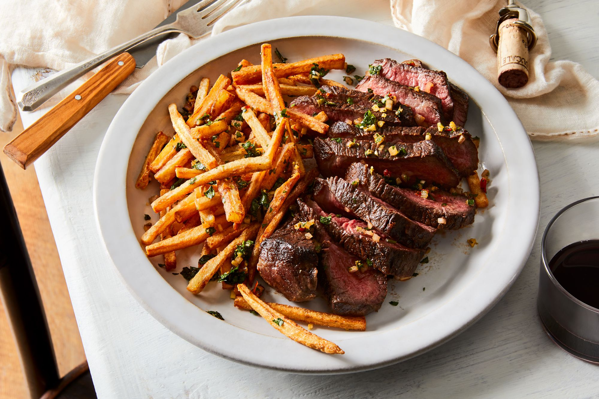

Steak and Frites Recipe

Description
A quick and flavorful Korean-inspired ground beef dish with a savory-sweet sauce, perfect over rice or noodles for an easy weeknight dinner.
Ingredients
- 2 Ribeye or Sirloin steaks (about 8 oz each)
- Salt and pepper, to taste
- 2 tbsp olive oil
- 4 large russet potatoes, cut into fries
- 2 tbsp vegetable oil (for fries)
- 2 tbsp butter
- 2 cloves garlic, smashed
- Fresh thyme or rosemary (optional)
Steps
- Preheat the oven to 425°F (220°C) for the fries.
- Toss the potato fries with vegetable oil, salt, and pepper, then spread on a baking sheet.
- Bake for 25-30 minutes, turning halfway through, until golden and crispy.
- Season the steaks with salt and pepper on both sides.
- Heat olive oil in a skillet over medium-high heat.
- Cook the steaks 3-5 minutes per side for medium-rare (adjust for thickness).
- Add butter, smashed garlic, and herbs to the pan and baste the steaks for extra flavor.
- Remove steaks from the pan and let them rest for 5 minutes.
- Serve steaks with the crispy fries on the side.